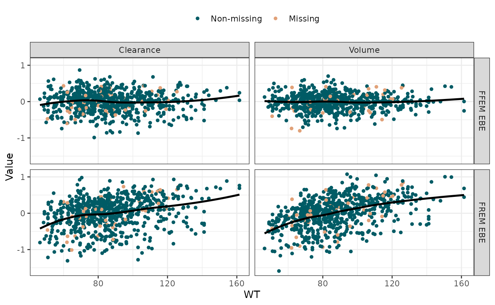

Plot FREM ETAs and ETA_prims against a specified covariate
plotEtasCov.RdGenerates a diagnostic scatter plot with a smoothing line, comparing selected ETA estimates (FREM ETA, ETA_prim, and/or FFEM EBE) against a specified covariate. The plot is faceted by the ETA type (columns) and the calculation method (rows). It automatically colors points based on whether the covariate was missing in the original clinical dataset.
Usage
plotEtasCov(
df,
covName,
etaNames = NULL,
etaTypes = c("FREM", "Prim"),
etaLabels = NULL,
typeLabels = c(FREM = "FREM ETA", Prim = "ETA Prim", EBE = "FFEM EBE"),
xlab = covName,
ylab = "Value",
colorNonMissing = "#005B65",
colorMissing = "#E1A178",
pointShape = 16,
pointSize = 1.5,
pointAlpha = 1,
smoothMethod = "loess",
smoothColor = "black",
smoothLinetype = "solid",
smoothSize = 1,
smoothSe = FALSE,
...
)Arguments
- df
A data frame generated by
calcEtas(run withappendMissingFlags = TRUE).- covName
A character string specifying the name of the covariate to plot on the x-axis (e.g.,
"WT").- etaNames
A character vector of structural ETAs to include in the plot (e.g.,
c("ETA3", "ETA4")). IfNULL(default), all columns matching the regex"^ETA[0-9]+$"will be automatically detected and plotted.- etaTypes
A character vector specifying which types of ETAs to plot. Allowed values are
"FREM","Prim", and"EBE". Defaults toc("FREM", "Prim"). The order specified here determines the top-to-bottom row order in the plotted facets.- etaLabels
A character vector of custom labels for the ETA columns. Must be the same length as
etaNames. IfNULL(default),etaNamesare used.- typeLabels
A named character vector specifying custom labels for the ETA calculation types (the facet rows). Defaults to
c("FREM" = "FREM ETA", "Prim" = "ETA Prim", "EBE" = "FFEM EBE").- xlab
Character string for the x-axis title. Defaults to
covName.- ylab
Character string for the y-axis title. Defaults to
"Value".- colorNonMissing
Character string (hex code or color name) for non-missing points. Defaults to
"#005B65"(dark teal).- colorMissing
Character string (hex code or color name) for missing points. Defaults to
"#E1A178"(peach).- pointShape
Integer. The ggplot2 shape code for the points. Defaults to
16.- pointSize
Numeric. The size of the points. Defaults to
1.5.- pointAlpha
Numeric. The transparency of the points. Defaults to
1.- smoothMethod
Character string. The smoothing method to use (e.g.,
"loess","lm"). Defaults to"loess".- smoothColor
Character string for the smoothing line color. Defaults to
"black".- smoothLinetype
Character string for the smoothing line type. Defaults to
"solid".- smoothSize
Numeric. The thickness of the smoothing line. Defaults to
1.- smoothSe
Logical. Display confidence interval around smooth? Defaults to
FALSE.- ...
Additional arguments passed directly to
ggplot2::geom_smooth()(e.g.,span,formula).
See also
Other Diagnostics & Plotting:
calcEtas(),
calcFremShrinkage(),
fremParameterTable(),
getExplainedVar(),
getForestDFFREM(),
plotCovDist(),
plotExplainedVar(),
traceplot()
Examples
library(PMXFrem)
library(ggplot2)
model_dir <- system.file("extdata/SimNeb/", package = "PMXFrem")
data_path <- system.file("extdata/SimNeb/DAT-2-MI-PMX-2-onlyTYPE2-new.csv", package = "PMXFrem")
my_data <- read.csv(data_path)
my_data <- my_data[my_data$BLQ != 1, ]
ind_params <- calcEtas(
modName = "run31",
modDevDir = model_dir,
numNonFREMThetas = 7,
numSkipOm = 2,
dataFile = my_data,
parNames = c("CL", "V", "MAT"),
ffemModName = "run31max0",
appendMissingFlags = TRUE
)
# Plot with custom labels for publication
p3 <- plotEtasCov(
df = ind_params,
covName = "WT",
etaNames = c("ETA3", "ETA4"),
etaTypes = c("EBE", "FREM"),
etaLabels = c("Clearance", "Volume"),
typeLabels = c("EBE" = "FFEM EBE", "FREM" = "FREM EBE")
)
print(p3)
#> `geom_smooth()` using formula 'y ~ x'
